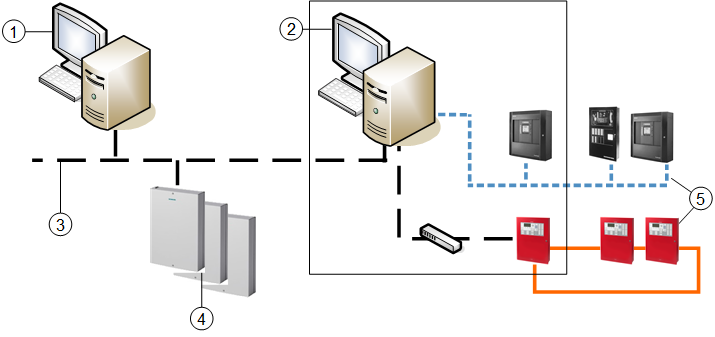

SiPass Access Control System Architecture
The SiPass access control system can communicate with Desigo CC over a network IP connection.
NOTE: The Desigo CC server and the SiPass server are typically installed on separate, networked computers. If you require a configuration with both SiPass and Desigo CC on the same computer, contact customer support for details of the installation method.
SiPass and Fire Networks
SiPass and Fire extension modules can coexist on a Desigo CC Server or FEP to provide basic integration with Fire Safety Systems for monitoring and control via manual commands or preconfigured logic, to access control and fire safety from the same location.

Item | Description |
1 | SiPass Integrated server |
2 | Management platform server |
3 | TCP/IP network |
4 | Access Controllers |
5 | Fire Networks, as an example of other disciplines |